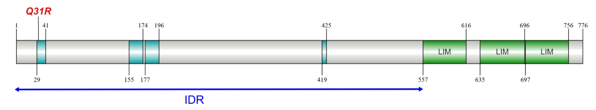

 |
 |
The top image depicts the domain structure of A. nidulans PaxB, where IDR indicates the Intrinsically Disordered Region, and
Q31R designates the predicted amino acid substitution in the
sepD5 mutation. Three LIM domains are shown at the C-terminus.
|